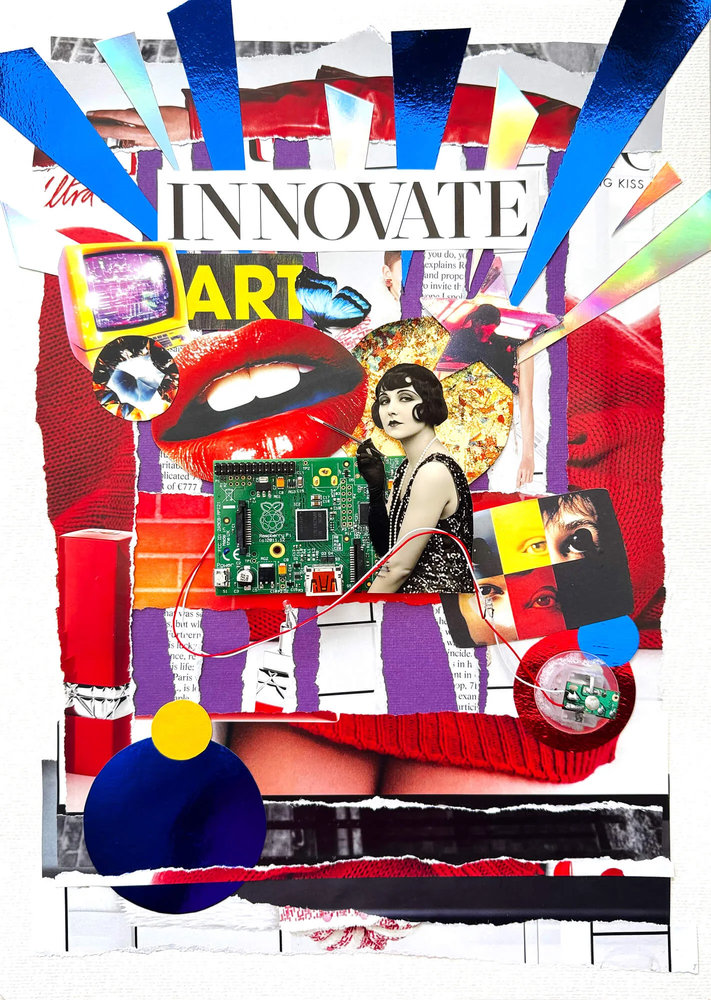

Analogue collage Electric Muse  MediumMixed media collage with vintage print and electronic PC components DimensionsA3, 29.7 × 42 cm. Framed, 42 × 52 cm YearNovember 2025 For availability, write to hello@irinacsapo.co.uk. PreviousElectric Eve NextKilobyte Cabaret